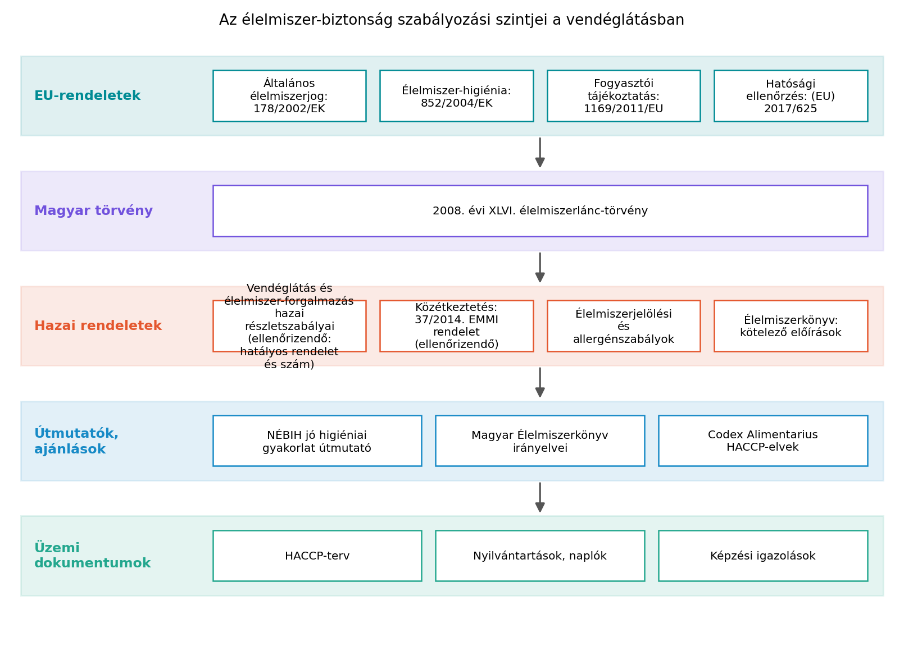

Képzeld el, hogy a konyhán átvesztek egy friss darált hússzállítmányt. A csomagoláson nincs tételazonosító, a szállító nem ad át bizonylatot, a gépkocsi hűtőterének hőmérsékletét senki nem nézte meg. Másnap egy vendég gyomorrontást jelent be. Az üzemeltető nem tudja megmondani, honnan származik a hús, melyik tányérba került, és mikor meddig állt a konyhán. Ilyenkor már késő azon gondolkodni, milyen szabályokat kellett volna betartani.
A jogi keretek nem irodai formaságok. Azt határozzák meg, hogy a konyhának milyen bizonyítékokkal kell igazolnia: az étel nyomon követhető, higiénikusan készült, és a vendéget pontosan tájékoztatták. Ha ezt megérted, a hatósági ellenőrzés nem fenyegetés, hanem a te munkád védelme is: megmutatja, mit kell ellenőrizned a mindennapokban.
A szabályozás olyan, mint egy többrétegű tányérdesszert, amelyet felülről lefelé vágsz át. Felül az uniós keretek állnak, alattuk egyre konkrétabb szabályok: a magyar törvény, a hazai rendeletek a Magyar Élelmiszerkönyv kötelező előírásaival, majd az útmutatók, amelyek a mindennapi értelmezést segítik. Legalul a te üzemed saját dokumentumai: a HACCP-terv, a hőmérsékleti naplók, a takarítási terv, a dolgozók képzési igazolásai. Egyik réteg sem helyettesítheti a másikat.

A rétegződés azt is megmutatja: ha felülről lefelé haladsz, egyre konkrétabb, egyre inkább a te konyhádra szabott szabályokhoz érsz. Az EU-rendelet azt mondja ki, hogy a vállalkozónak biztonságos élelmiszert kell forgalomba hoznia. A magyar törvény megnevezi a hatóságot és a szankciókat. A te HACCP-terved pedig azt mondja meg, nálad milyen főzési maghőmérsékletet kell mérni, és hova kell azt beírni. A Magyar Élelmiszerkönyv azért szerepel két rétegben, mert kettős jellegű: kötelező előírásait rendelet teszi kötelezővé (hazai rendeletek), irányelvei viszont ajánlások (útmutatók) (ellenőrizendő: a Magyar Élelmiszerkönyv kiadásának hatályos jogi formája).
Definíció. Élelmiszer-vállalkozó. (A fogalmat a 178/2002/EK rendelet határozza meg, a 852/2004/EK erre épít; ellenőrizendő: hatályos szöveg.) Az a természetes vagy jogi személy, aki üzleti tevékenységként élelmiszert állít elő, feldolgoz, tárol, szállít vagy forgalomba hoz. A vendéglátó egység üzemeltetője is élelmiszer-vállalkozó, még akkor is, ha csak tálalja az ételt, vagy készételt melegít.
Definíció. Forgalomba hozatal. Élelmiszer rendelkezésre bocsátása a vendég vagy más vásárló számára. A vendéglátásban a tányérra tett étel is forgalomba hozatal, ezért ugyanolyan szabályok vonatkoznak rá, mint a boltban értékesített élelmiszerre.
Definíció. Nyomonkövethetőség. Az élelmiszer útjának azonosíthatósága a termeléstől vagy beszerzéstől a tálalásig. A gyakorlatban azt jelenti, hogy a vállalkozó tudja, kitől kapta az alapanyagot, és kinek adta a kész ételt. A vendéglátásban a „kinek adta” sokszor a napi menü tételes nyilvántartásával, a rendelési és kiadási dokumentumokkal igazolható.
Jogszabály. Általános élelmiszerjog: 178/2002/EK rendelet. Ez az uniós rendelet a vendéglátó munkájának jogi alapja. Kimondja, hogy az élelmiszer nem hozható forgalomba, ha nem biztonságos. A vállalkozó felel az általa forgalomba hozott élelmiszer biztonságáért. Előírja a nyomonkövethetőséget, a kockázat észlelésekor a hatóság értesítését, a termék kivonását és visszahívását. A rendelet bevezeti az elővigyázatosság elvét: ha komoly bizonytalanság merül fel, a fogyasztó védelme előbbre való, mint a bizonytalan tudományos vita lezárása. A konkrét cikkek és határidők szövegét a kiadás előtt ellenőrizni kell. (ellenőrizendő: 178/2002/EK hatályos szövege)
Jogszabály. Élelmiszer-higiéniai rendelet: 852/2004/EK rendelet. Ez a rendelet a vendéglátó üzemre szabott higiéniai követelményeket fogalmazza meg. Kötelezi az élelmiszer-vállalkozót, hogy a termelést, feldolgozást és forgalmazást a jó higiéniai gyakorlatnak megfelelően végezze. Előírja a veszélyelemzésen alapuló, kritikus pontokat ellenőrző eljárást, amelyet a mindennapi munkában HACCP-nek nevezünk. A rendelet mellékletei tartalmazzák a helyiségekre, berendezésekre, hulladékkezelésre, vízellátásra, személyi higiéniára és hőmérsékleti követelményekre vonatkozó kereteket. A konkrét előírások a hatósági útmutatókban és az üzemi HACCP-tervben konkretizálódnak. (ellenőrizendő: 852/2004/EK hatályos szövege és mellékletei)
Jogszabály. Fogyasztói tájékoztatás: 1169/2011/EU rendelet. Ez a rendelet az élelmiszerek jelölését és a vendég tájékoztatását szabályozza. A vendéglátásban kínált, nem előre csomagolt ételnél is tájékoztatni kell a fogyasztót a 14 jelölésköteles allergénről. A részletes hazai előírásokat a magyar rendelet és a hatósági útmutató részletezi. (ellenőrizendő: 1169/2011/EU II. melléklet és a nem előre csomagolt élelmiszerekre vonatkozó hazai szabály)
Jogszabály. Hatósági ellenőrzés: (EU) 2017/625 rendelet. Ez a rendelet az élelmiszerlánc egészére vonatkozó hatósági ellenőrzések keretét adja. Meghatározza, hogy a tagállami hatóságok milyen elvek szerint kockázatelemzést végeznek, mintát vesznek, és milyen intézkedéseket tehetnek. A magyar hatóságok ennek alapján ellenőrzik a konyhákat is. (ellenőrizendő: (EU) 2017/625 rendelet hatályos szövege)
Jogszabály. Magyar élelmiszerlánc-törvény: 2008. évi XLVI. törvény. Ez a magyar törvény az élelmiszerlánc valamennyi szereplőjére kiterjed, a takarmánytól az étel tálalásáig. Megnevezi az élelmiszerlánc-felügyeleti hatóságot, meghatározza az eljárás rendjét, a bírságolás kereteit és a fogyasztók tájékoztatásához kapcsolódó alapelveket. A törvény végrehajtását miniszteri rendeletek, például a vendéglátás és az élelmiszer-forgalmazás részletszabályait tartalmazó rendeletek (ellenőrizendő: hatályos szám és cím), valamint a közétkeztetés táplálkozás-egészségügyi előírásairól szóló 37/2014. (IV. 30.) EMMI rendelet (ellenőrizendő: hatályos szöveg) szabályozzák. (ellenőrizendő: 2008. évi XLVI. törvény hatályos szövege és végrehajtási rendeletei)
Jogszabály. Magyar Élelmiszerkönyv. A Magyar Élelmiszerkönyv (Codex Alimentarius Hungaricus) nem egyetlen törvény, hanem kötelező előírások és ajánlások gyűjteménye. Többek között meghatározza az élelmiszerek megnevezését, összetételét, minőségi osztályait. A szakácsnak azért fontos, mert a pontosan megnevezett étel és alapanyag mögött meghatározott minőségi követelmény áll. (ellenőrizendő: Magyar Élelmiszerkönyv hatályos fejezetei)
Szabály. A vállalkozó felelőssége nem átruházható. Az üzemeltető akkor is felelős az étel biztonságáért, ha az alapanyagot rosszul szállították, ha a dolgozó hibázott, vagy ha a hatóság korábban nem talált problémát. A szakács ezért nem csupán készítő, hanem önellenőrző is: minden műszakban igazolnia kell a hűtést, a hőkezelést, a tárolást és a nyomon követhetőséget.
A nyomonkövethetőséget a vendéglátásban leggyakrabban az „egy lépéssel előre, egy lépéssel hátra” szabállyal magyarázzuk. Ha átveszel egy hússzállítmányt, tudnod kell, kitől érkezett, milyen tételszám alatt, mikor és milyen hőmérsékleten. Ha a kész ételt kiadod, tudnod kell, melyik napi menühöz, melyik rendezvényhez vagy asztalhoz került. Ezt dokumentálni kell, mert a memória nem bizonyíték.
A konyhán ehhez legalább a következő bizonylatok kapcsolódnak:
Ezek a dokumentumok a HACCP-rendszer mindennapi részei. A részletes eljárást az A HACCP hét alapelve és a veszélyelemzés alfejezetben bontjuk ki.
Szabály. A hatóság nem a szakács ellen dolgozik. Az élelmiszerlánc-felügyeleti hatóság célja a fogyasztók egészségének védelme és a tisztességes piaci verseny fenntartása. Az ellenőr azt vizsgálja, hogy az üzem a mindennapi munkában képes-e a jogszabályban leírt biztonságot igazolni.
Magyarországon az élelmiszerlánc-felügyeletet a Nemzeti Élelmiszerlánc-biztonsági Hivatal (NÉBIH) és a területi, járási hivatalok élelmiszerlánc-biztonsági szervezete látja el. A szakács a gyakorlatban leggyakrabban a járási hivatal ellenőrével találkozik. Az ellenőrzés lehet:
Az ellenőr a vendéglátásban jellemzően az alábbi területeket vizsgálja:
| Ellenőrzési terület | Mit néz meg? | Mit kérhet? |
|---|---|---|
| Nyomonkövethetőség | Szállítólevél, tételazonosító, felhasználás | Beszerzési és termelési bizonylatok |
| Hűtőlánc | Hűtők és fagyasztók hőmérséklete | Hőmérsékleti naplók |
| Hőkezelés | Főzés, sütés, melegen tartás | Hőmérési feljegyzések, maghőmérő |
| HACCP | Veszélyelemzés, kritikus pontok | HACCP-terv és helyesbítő tevékenységek |
| Higiénia | Kézmosás, munkaruha, takarítás | Takarítási terv, fertőtlenítőszer adatlap |
| Allergének | Külön tárolás, tájékoztatás | Allergénmátrix, vendégtájékoztató |
| Dolgozók | Egészségügyi alkalmasság, képzés | Igazolások, oktatási napló |
A táblázat az ellenőrzési gyakorlatot foglalja össze. Az üzemi dokumentáció mindig a hatályos jogszabályhoz és a saját HACCP-tervhez igazodjon. (ellenőrizendő: NÉBIH ellenőrzési útmutató és a hatályos eljárásrend)
Szabály. Az ellenőr kérhet, a vállalkozó köteles bemutatni. Az együttműködés nem udvariasság, hanem jogi kötelezettség. A hiányzó dokumentum vagy a bemutatatlan hűtési napló önmagában is szabálytalanság lehet, még akkor is, ha az étel egyébként megfelelő.
A hatóság nemcsak szemlél, hanem intézkedik. A lehetséges lépések a hiba súlyától függenek:
A bírság összege és a határidők az esettől függenek, ezért mindig a hatályos jogszabályt kell megnézni. (ellenőrizendő: bírságösszegek, eljárási határidők)
Figyelem. A vendégpanasz is hatósági ügy lehet. Ha egy vendég ételmérgezésre utaló tüneteket jelez, a konyhának azonnal értesítenie kell az üzemeltetőt, meg kell őriznie a gyanús ételből mintát, ha van, és rögzítenie kell a panasz adatait. A hatóság bejelentés alapján is ellenőrizhet.
Eljárás. Gyanú esetén kövesd a négy lépést.
A visszahívás a vendéglátásban ritkán olyan látványos, mint a boltokban, de a napi menü dokumentálása nélkül nem lehet körülhatárolni, melyik vendég kaphatta a hibás tételt. Ezért a nyomonkövethetőség nem papírmunka, hanem válságkezelő eszköz.
A jogi kereteknek a konyhán mérhető és ellenőrizhető jelei vannak. Azt ellenőrizd, hogy a dokumentumok és a valóság egy irányba mutatnak.
Összefüggés. Amit leírtál, annak a hűtőben is úgy kell lennie. Ha a hűtési napló reggel 8 órakor 5 °C-ot mutat, a hűtő belső hőmérőjének is körülbelül ezt az értéket kell mutatnia. Ha a szállítólevél 10 kg csirkemellet igazol, a kamrában is körülbelül ennyinek kell lennie, figyelembe véve a már felhasznált mennyiséget. Az ellentmondás azonnali javítást kíván.
Az üzemi önellenőrzéshez nem kell jogász. A műszak végén kérdezd meg:
Ez az önellenőrzés készíti fel a konyhát a hatósági ellenőrzésre is.
Hiba. A szállítólevél nélküli áru átvétele. A konyha gyorsan dolgozik, nincs idő a papírra. Következménye: nyomonkövethetetlen alapanyag kerül a konyhába, és egy későbbi visszahívásnál nem lehet igazolni a származást. Helyes gyakorlat. Bizonylat nélkül ne vedd át az árut, vagy azonnal kérj utólagos igazolást, és rögzítsd az átvételt.
Hiba. A hőmérsékleti értékeket előre vagy utólag, emlékezetből írják be. A napló szabályosnak tűnik, de a valós érték ismeretlen. Helyes gyakorlat. A mérést a mérés pillanatában, a valós értékkel rögzítsd. A maghőmérőt minden kritikus pontnál használd.
Hiba. A HACCP-tervet lefűzik, de a dolgozók nem ismerik. A hatósági ellenőr kérdez, a dolgozó pedig nem tudja megmondani, mi a kritikus pont. Helyes gyakorlat. A HACCP-terv lényegét minden dolgozóval ismertetni kell, és a munkaköri betanítás részévé kell tenni.
Hiba. Az allergén tájékoztatást „úgyis tudja a vendég” alapon elhagyják. A jogszabály nem a vendég találgatására épít. Helyes gyakorlat. A menün és a pultnál is tüntessétek fel a 14 fő allergént, és a kérdésre pontos választ adjatok.
Egy étteremben a járási hivatal ellenőrzést tartott. Az ellenőr a hűtőben talált egy fagyasztott csirkeszállítmányt. A szállítólevél megvolt, a csomagolás sértetlen volt. A szakács azonban nem tudta megmondani, mikor vették át, és nem volt bejegyezve a fagyasztó hőmérsékleti naplójába. Az ellenőr nem az étel minőségét kifogásolta, hanem a nyomonkövethetőség és a hőmérséklet-ellenőrzés hiányát. Az üzemeltető kisebb hibajegyzéket és határidős felszólítást kapott, a tételt pedig átmenetileg zárolták, amíg a származását nem igazolták. A tanulság: nem elég, hogy az étel jól nézzen ki, a biztonságot papíron is tudni kell igazolni. (ellenőrizendő: konkrét hatósági gyakorlat, szankciók)
Válaszolj röviden, majd nézd meg a „Megoldások” szakasz elején található válaszokat.
1. feladat (A). Nevezd meg a három fő uniós rendeletet, amely a vendéglátó konyha élelmiszer-biztonsági munkáját meghatározza, és írd mellé, mire vonatkozik.
2. feladat (A). Csoportosítsd a következő dokumentumokat: szállítólevél, HACCP-terv, 2008. évi XLVI. törvény, NÉBIH útmutató, hűtési napló, 852/2004/EK rendelet. Melyik uniós jogszabály, magyar jogszabály, hivatalos útmutató vagy üzemi dokumentum?
3. feladat (B). Egy hússzállítmány érkezik. Az átvételi lapon szerepeljen: szállító megnevezése, termék, tételazonosító, mennyiség, hűtési hőmérséklet. Írd le a nyomonkövetés három pillérét, amelyet az átvételkor rögzítened kell, mielőtt a hús a hűtőbe kerül.
4. feladat (B). Az ellenőr kéri a főzési maghőmérsékleti feljegyzéseket. Miért vizsgálhatja ezt a hatóság a 852/2004/EK rendelet alapján? Fogalmazz két okot.
5. feladat (C). Építsd fel a szabályozási rétegek sorát az üzemi mindennapokig! Kezdd az uniós rendelettel, és haladj a te konyhád saját dokumentumáig. Tedd mellé, melyik réteg mit ad a szakácsnak. Ez a sorrend kell a HACCP hét alapelve és a veszélyelemzés alfejezetben.
6. feladat (D). Készíts egy féloldalas „reggeli műszakindító ellenőrzőlistát” a jogi megfelelőségre. Szerepeljen benne: bizonylatok, hűtési hőmérséklet, HACCP-kritikus pontok, allergéntájékoztató. Tüntesd fel, mi a teendő, ha egy pont nem teljesül.
Három fő uniós rendelet:
Csoportosítás:
A szállítólevél nyomonkövetési bizonylat, a HACCP-terv üzemi szabályozás, a hűtési napló üzemi nyilvántartás.
A nyomonkövetés három pillére az átvételnél:
A hatóság azért vizsgálhatja a főzési maghőmérsékleti feljegyzéseket, mert:
A szabályozási rétegek sorrendje:
Ezt a rétegződést használjuk a HACCP hét alapelve és a veszélyelemzés alfejezetben.
Példa műszakindító lista:
Ha egy pont nem teljesül, a dolgozó ne használja fel a gyanús anyagot, értesítse a műszakvezetőt, és a helyesbítést írják a HACCP naplóba.
Az élelmiszer-biztonság jogi kerete a vendéglátó konyhában rétegzett. Az uniós 178/2002/EK rendelet kimondja a vállalkozó felelősségét, a nyomonkövethetőséget és a visszahívás kötelezettségét. A 852/2004/EK rendelet előírja a jó higiéniai gyakorlatot és a HACCP-alapú eljárást. A 1169/2011/EU rendelet a fogyasztói tájékoztatást és a 14 fő allergén kezelését szabályozza. A magyar élelmiszerlánc-törvény és a hazai végrehajtási rendeletek a hatósági ellenőrzés kereteit adják. A NÉBIH és a járási hivatalok a konyhán a nyomonkövethetőséget, a hűtési láncot, a hőkezelést, a HACCP-dokumentációt, a higiéniát, az allergének tájékoztatását és a dolgozók képzettségét vizsgálják. A szabályozási szintek térképét az A HACCP hét alapelve és a veszélyelemzés alfejezetben használjuk tovább, mert a HACCP-terv erre a jogi alapra épül. A szakács felelőssége, hogy a dokumentumok és a konyhai valóság egy irányba mutassanak. A gyanús, nem biztonságos étel első lépése mindig a zárolás, majd az értesítés, a nyomon követés és a helyesbítő tevékenység. (ellenőrizendő: valamennyi hivatkozott jogszabály hatályos szövege és a hatósági eljárásrend)
Forrástípusok: uniós rendeletek (178/2002/EK, 852/2004/EK, 1169/2011/EU, (EU) 2017/625), magyar élelmiszerlánc-törvény (2008. évi XLVI. törvény), hazai vendéglátó-ipari és közétkeztetési rendeletek, NÉBIH útmutatók, Magyar Élelmiszerkönyv, Codex Alimentarius HACCP-elvek, 37/2014. EMMI rendelet.
Ellenőrizendő kiadás előtt: a fenti jogszabályok hatályos száma, címe és szövege; a 178/2002/EK nyomonkövethetőségre és visszahívásra vonatkozó cikkei; a 852/2004/EK HACCP-t előíró rendelkezései; a 1169/2011/EU II. melléklet allergénlistája; a járási hivatalok és a NÉBIH pontos hatásköre, az ellenőrzési eljárásrend; a szankciók típusa, bírságösszegek; a vendéglátásra és az élelmiszer-forgalmazásra vonatkozó hazai végrehajtási rendeletek pontos címe, száma és követelményei; a közétkeztetési rendelet hatálya; a hatósági mintavétel és ételminta-megőrzés konkrét szabályai. A jogszabályokat ne idézzük szó szerint, és cikk- vagy paragrafusszámot csak ellenőrzött kiadásban tüntessünk fel.